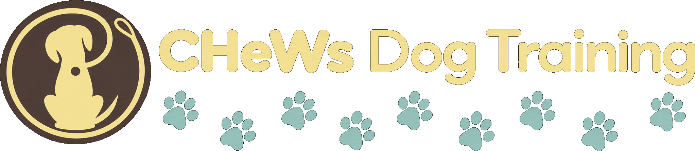
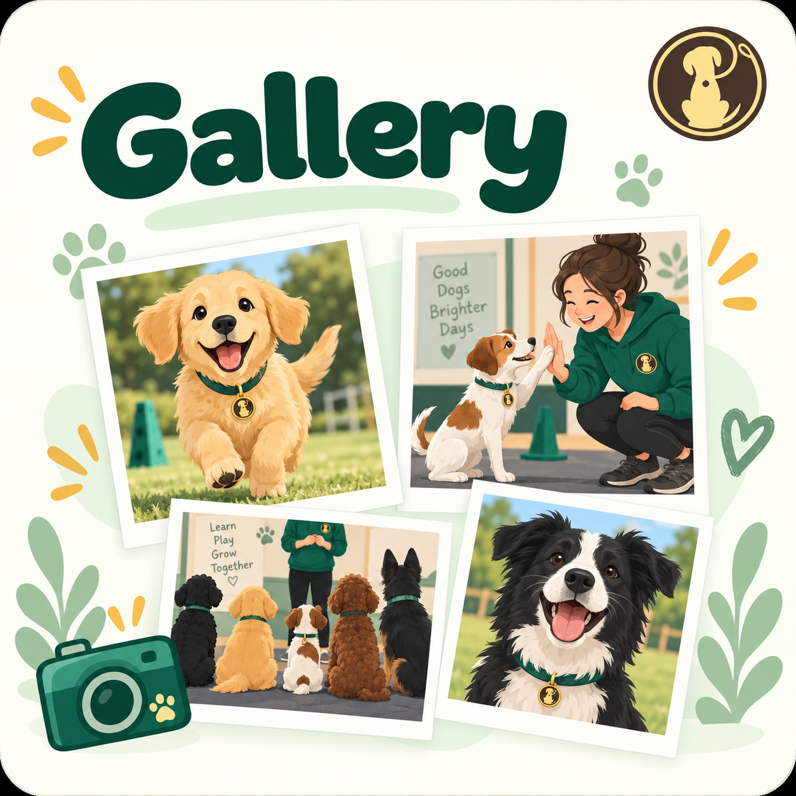

🐾
Classes & timetable
Compare class levels, fees and weekly times, then check exactly which hall you need.
View classes →
Friendly dog training in Chingford since 2012From first puppy skills to Royal Kennel Club Good Citizen awards, CHeWs helps dogs and their people build confidence, communication and reliable everyday manners through positive, practical training.

CHeWs is a pet dog socialisation and training club, not a behaviourist service. Our group classes are designed for dogs who can learn safely alongside other dogs and people.
If your dog has severe behavioural concerns, significant aggression or needs specialist rehabilitation, please contact us before booking. We will always be honest about whether a group class is the right setting and can suggest a more appropriate professional where needed.
Dogs attending CHeWs must be vaccinated and microchipped, with up-to-date proof available when requested.
New puppy, Good Citizen goals or simply looking to keep learning? Choose the class that best matches where you are now.
Compare class levels, fees and weekly times, then check exactly which hall you need.
View classes →We train at two Chingford venues. Clear maps and directions make getting to the right hall simple.
Maps & directions →Discover the people, experience and community spirit behind more than a decade of local dog training.
Meet the team →
From training milestones to dog shows, charity events and plenty of happy dogs, CHeWs is a community built around learning together.
Visit the galleryOur team brings practical experience, recognised qualifications and a shared commitment to kind, effective training.
There is often something happening beyond the training hall. See what is coming up and where you can join us.